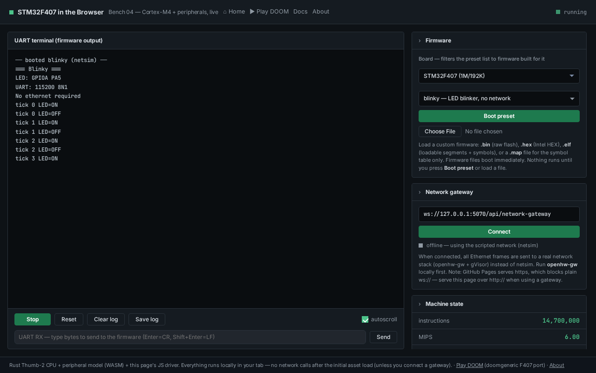
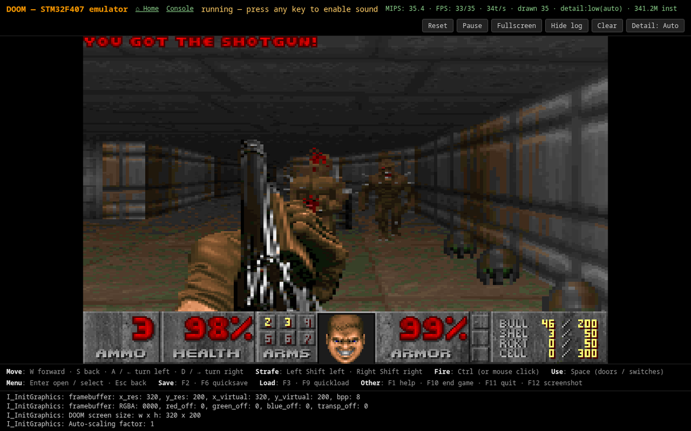

About
stm32f4-emu runs real compiled STM32F407 firmware — not a reimplementation — by pairing a CPU emulator with a model of the on-chip peripherals. Boot a binary, watch its UART, poke GPIO and registers, drive it from scripts, a web UI, or an MCP client.

How it fits together
Three parts, one width-correct call per register access.
- CPU — a Rust WASM-native Thumb-2 interpreter with exact Cortex-M exception entry/return, including the VFPv4-SP FPU. Reset vector, SP/PC, and NVIC handling follow the Cortex-M programming model.
- Peripheral model — a Rust crate compiled to WASM. 41 modules (RCC, GPIO, USART, TIM, NVIC/SysTick/EXTI, ETH+DMA, I2C, SPI/I2S, CAN, LTDC, DCMI, RTC, QSPI, ADC, FLASH …) answer
periph_read/periph_write. - JS driver — steps the core (
emu.step(budget)), drains UART, services ETH TX/RX and DMA, drives virtual devices. Guest IRQs are delivered inline when the firmware opts in (enable_irqs/irq_eth/freertos/lowpower); polling firmware runs with delivery off.
- Peripherals modeled
- 41 / 41
- Firmware builds
- 223
- Chips
- F401 · F411 · F407 · VE · F429
- DOOM
- 35 fps
Full design: docs/architecture.md. Per-peripheral matrix: docs/peripherals.md.
What runs on it
A few of the 223 builds.
| Firmware | What it shows |
|---|---|
eth_http | DHCP → TCP handshake → HTTP GET/response, through a real gVisor stack or canned netsim. |
blinky | Bare-metal blink + UART banner; toggles PA5 so the GPIO panel updates live. |
can_test | Two-node CAN bus: loopback TX, arbitration (lower ID wins), filter-gated delivery. |
freertos_test | FreeRTOS scheduler: TIM3 ISR → xSemaphoreGiveFromISR → PendSV context switch. |
rtc_test | DS3231 I2C RTC: set time, read-back, temperature. |
fpu_test | VFPv4-SP FPU: real GCC hard-float output with bit-exact result checks. |
mpu_test | MPU enforcement: regions + MemManage faults with exact MMFSR/MMFAR. |
usb_cdc_test | USB OTG FS device: CDC-ACM enumeration + bulk echo via a scripted host. |
oled_test / tft_test / buzzer_test | Virtual peripherals over I2C/SPI/TIM (SSD1306, ILI9341, PWM). |
doom | doomgeneric F407 port — DOOM 1 shareware in a Web Worker. Open doom.html. |

Use it
Three doors.
Headless CLI
# boot a firmware and stream its UART to stdout node cli.mjs firmware.bin --inst 20000000 # load an ELF, trace peripheral register accesses to stderr node cli.mjs app.elf --verbose node cli.mjs --help # usage + all flags node cli.mjs --version # version
Flags: --inst <N> instruction budget,
--format auto|bin|hex|elf, --verbose register
trace, --help, --version.
Browser console
# from the repo root python3 -m http.server 8123 --directory site # then open http://localhost:8123/console.html
Pick a firmware preset, click Run, watch the UART terminal — plus a live GPIO grid, key peripheral registers, device panels, and real Ethernet with a gateway URL.
Node library
// npm install stm32f4-emu (or use the local checkout) import { createSTM32F407 } from 'stm32f4-emu'; import { readFileSync } from 'node:fs'; const fw = new Uint8Array(readFileSync('firmware.bin')); const emu = await createSTM32F407({ firmware: fw }); for (let i = 0; i < 200; i++) { emu.step(100000); // run up to 100k instructions const uart = emu.drainUart(); if (uart.length) process.stdout.write(uart.toString()); } console.log('PC=', emu.read32(0x08000000 + 4).toString(16));
Key handle methods: step(n), run(n),
drainUart(), read32/write32/read16/write16/read8/write8,
close(). TypeScript types ship in index.d.ts.
MCP server
# optional peer dep: npm install @modelcontextprotocol/sdk zod npx stm32f4-mcp # speaks MCP over stdio
Exposes load/step/UART/pins/ADC/registers/memory/component tools to an MCP client (Claude Code, Claude Desktop). See docs/mcp.md.
Learn more
- docs/usage.md — CLI, browser, and library usage, config, env vars, building.
- docs/architecture.md — how the pieces fit together.
- docs/peripherals.md — every peripheral and how complete it is.
- docs/components.md — attach virtual LEDs/buttons/sensors to pins.
- docs/mcp.md — drive the emulator from an LLM via MCP.
- CHANGELOG.md — releases and features.